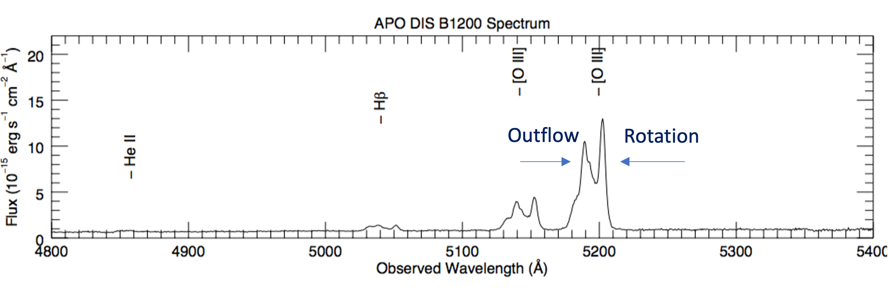
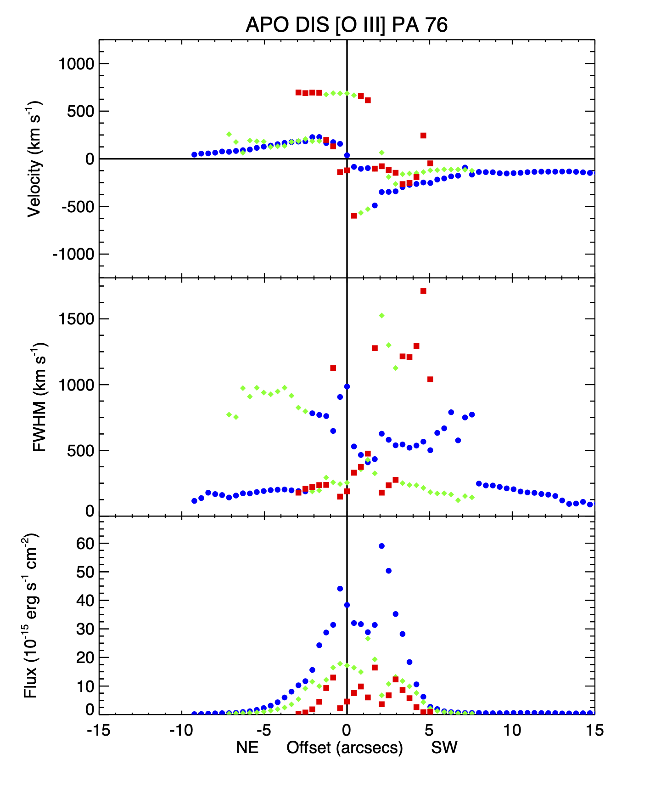
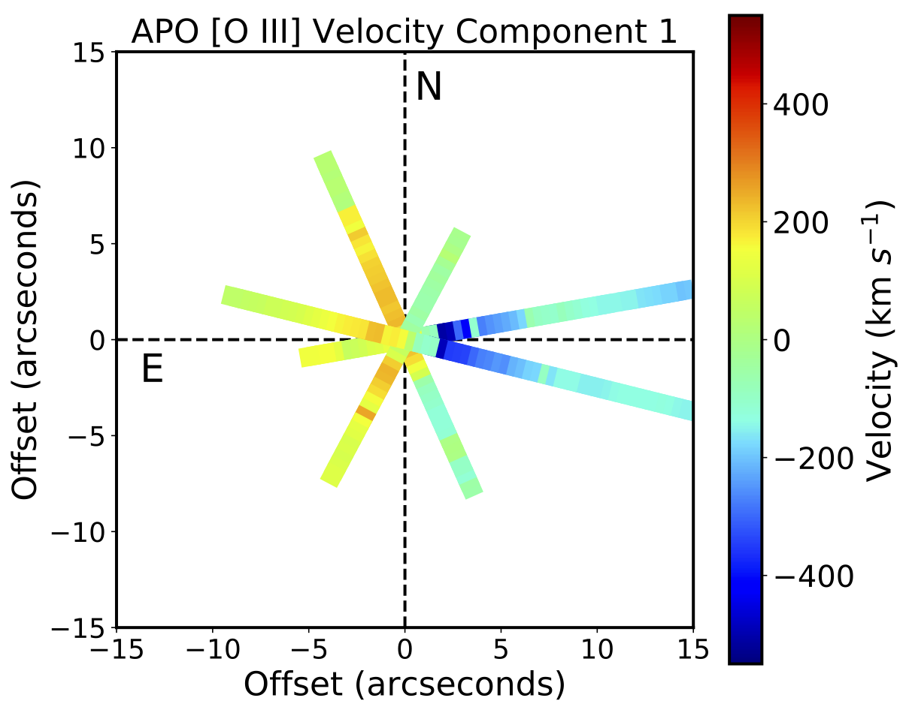
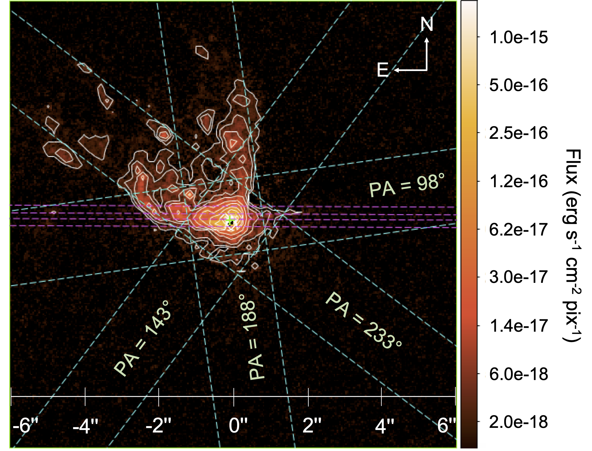
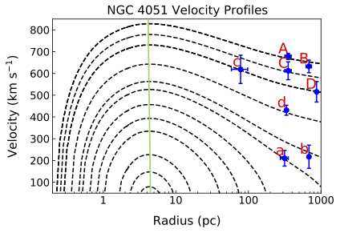

Tracing AGN ionized gas and outflows
Outflows driven by AGN can exist in form of molecular, neural or ionized gas. Understanding the role of each outflow phase is important to constraint the true impact of AGN feedback on star formation in a galaxy. For my work, I focus on ionized gas outflows as seen in the strong emission lines at distances up to 1Kpc from the nucleus, known as narrow-line region (NLR) outflows. We use long-slit measurements using APO's Dual Imaging Spectrograph (DIS) and HST's Space Telescope Imaging Spectrograph to observe the strong lines such as [O III], Hβ, Hα which are emitted by the hot outflowing gas. The long slits allow us to measure these lines at various positions along the slit.
The figure on the left below shows four DIS long slits position overlayed on a beautiful color-composite image (created by Judy Schmittt) of galaxy Mrk 78. The NRL ionized gas in Mrk 78 can be seen in light blue color while some of the other features such as dust lanes are visible in dark brown. An example of the spectrum extracted at a certain using APO-DIS slit is shown on the right. The distinct double-peak profiles in [O III] λλ 4959,5007 lines shows the two distinct kinematic components of the gas at that location. The component close to the systemic redshift of the galaxy generally corresponds to the galaxy rotation. On the other hand, a high blueshift/redshift in the line profile represents the outflow signature.
 A color composite image of Mrk 78 along with four APO slit positions. Image credits: Judy Schmidt A color composite image of Mrk 78 along with four APO slit positions. Image credits: Judy Schmidt
|  An example of the spectrum extracted from APO-DIS slit. Double peaks in the strong [O III] λλ 4959,5007 lines emission lines shows the rotational and outflow components.
|
We multiple Gaussian profiles to the spectral lines to measure the velocity centroids, full-width at half-maximum (FWHM), and flux of each kinematics component along the slit. An example of the radial kinematics distributions using [O III] emission lines for APO-DIS Slit at PA 76° is shown below in the left figure. The right-hand side image shows a pseudo-IFU map for all 4 APO APO DIS slits using the highest flux component. These long-slit observations help us accurately quantify the shape and extents of outflows and identify the galaxy rotation curves.
|  Kinematic and flux distribution of the ionized gas along APO slit at position angle 76° The colors represent the three kinematic components identified in the [O III] emission lines sorted by flux from high to low in blue-green-red.
|  A pseudo-IFU diagram using four APO-DIS long slit observations. It shows the velocity map of the highest flux component of the [O III] ionized gas.
|
This work was used to calculate the spatially resolved mass outflow rates and energetics in Mrk 78, which measures the energy deposited in the ambient medium by NLR outflows. The publications can be found here.
Where do the outflows come from?
For my second project, I worked on one of the most studied galaxies NGC 4051, which hosts a low mass and low luminosity AGN. The left figure below shows the circum-nuclear regions of NGC 4051 as seen in [O III] emissions using HST's narrow band filter. The one side of the outflow bicone is clearly visible in the NE. I again measured the gas kinematics and identified the AGN ionized outflows. Next, I determined the origin of the observed outflowing knots using a radiative-gravity model.
Some of the previous studies by our research group ( Crenshaw 2015, Revalski 2021) have shown that the mass outflow rates in a few moderate to high luminosity AGN increase at 100s of pc from the nucleus. This increase in outflow rates indicates the gas evacuation at large radii from the galaxy bulges.
However, in Meena et al 2021, we show that all the observed outflows in NGC 4051 are launched within 0.5 pc of the nucleus, which is part of the fueling flow to the torus. Therefore, possibly not affecting the gas reservoir at larger distances. Comparing these results with higher luminosity AGN shows that the maximum outflow launch radii depend on AGN luminosities. I am currently working on a larger sample size to strengthen this correlation further.
|  Continuum subtracted [O III] image of the nuclear regions of NGC 4051, which shows the one side of the outflows in a distinct conical structure. The dashed lines represent the HST (magenta) and APO (cyan) slit positions.
|  The velocity profiles of the AGN-driven outlaws based on radiation-gravity model. The curves represent the outflow trajectories that are launched at various radii from the supermassive black holes. The alphabetical letters are some of the observed outflow knots seen in [O III] emission line kinematics.
|